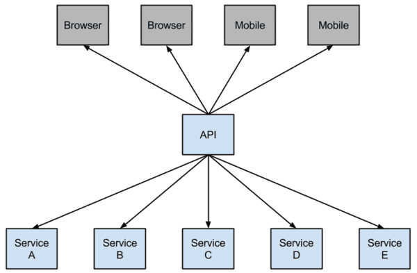
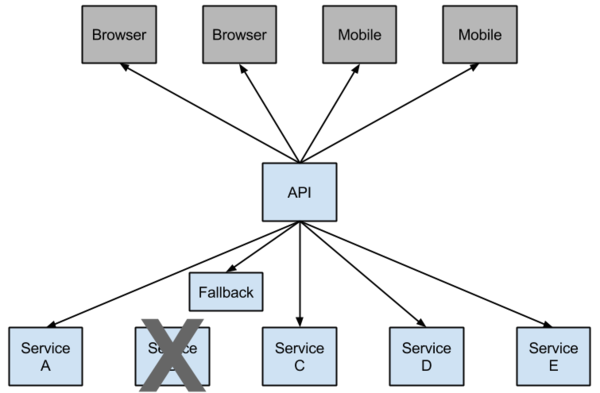

前记
上一章搭建了基本的服务架构，这章将了解断路器。
场景
在微服务架构中，我们将系统拆分成了一个个的服务单元，各单元间通过服务注册与订阅的方式互相依赖。由于每个单元都在不同的进程中运行，依赖通过远程调用的方式执行，这样就有可能因为网络原因或是依赖服务自身问题出现调用故障或延迟，而这些问题会直接导致调用方的对外服务也出现延迟，若此时调用方的请求不断增加，最后就会出现因等待出现故障的依赖方响应而形成任务积压，最终导致自身服务的瘫痪。
举个栗子：
在电商网站中，我们可能会将系统拆分成用户、订单、库存、积分、评论等一系列的服务单元。
用户在调用订单服务创建订单的时候，会向库存服务请求出货（判断是否有足够库存来出货）。如果此时库存服务因网络原因无法被访问到，将会导致创建订单服务的线程进入等待库存申请服务的响应，在漫长的等待之后用户会因为请求库存失败而得到创建订单失败的结果。在高并发情况下，这些等待线程在等待库存服务的响应而未能释放，会使得后续到来的创建订单请求被阻塞，最终导致订单服务也不可用。
因此相较传统架构，微服务的架构就显得不稳定。服务与服务之间的依赖性，故障会传播，会对整个微服务系统造成灾难性的严重后果，这就是服务故障的“雪崩”效应。为了解决这样的问题，就产生了断路器模式。
断路器
Netflix has created a library called Hystrix that implements the circuit breaker pattern. In a microservice architecture it is common to have multiple layers of service calls.
断路器模式源于 Martin Fowler 的 Circuit Breaker 一文。“断路器”本身是一种开关装置，用于在电路上保护线路过载，当线路中有电器发生短路时，“断路器”能够及时的切断故障电路，防止发生过载、发热、甚至起火等严重后果。
在分布式架构中，断路器模式的作用也是类似的，当某个服务单元发生故障（类似用电器发生短路）之后，通过断路器的故障监控（类似熔断保险丝），向调用方返回一个错误响应，而不是长时间的等待。这样就不会使得线程因调用故障服务被长时间占用不释放，避免了故障在分布式系统中的蔓延。
在微服务架构中，一个请求通常需要调用多个服务：

较底层的服务如果出现故障，会导致连锁故障。当对特定的服务的调用的不可用达到一个阀值（Hystric 是5秒20次） 断路器将会被打开。

断路打开后，就可以避免连锁故障，fallback 方法可以直接返回一个固定值。
Ribbon 添加断路器
在 ribbonConsumer 工程中添加依赖：
1 | <dependency> |
在启动类上加上 @EnableHystrix 注解开启 Hystrix：
1 |
|
在服务 add 处添加注解 @HystrixCommand 开启熔断功能，并且指定在熔断时返回的方法：
1 |
|
测试：
1 | $ curl http://localhost:9000/add\?a\=1\&b\=100 |
关闭 client，访问：
1 | $ curl http://localhost:9000/add\?a\=1\&b\=100 |
可以看到在提供服务的 client 不可用时，返回了失败，而不是等待响应超时，这就很好的控制了容器的线程阻塞。
Feign 使用断路器
Feign 是自带断路器的，不用添加依赖，但是默认是关闭的，要在 application.properties 配置文件里开启：
1 | feign.hystrix.enabled=true |
在服务接口处注解添加熔断时返回的 类：
1 | (value = "computeService", fallback = FeignComputeServiceFallbackImpl.class) |
再添加该处理类：
1 |
|
启动 feignConsumer，访问：
1 | $ curl http://localhost:9100/add\?a\=2\&b\=91 |
关闭 client，访问：
1 | $ curl http://localhost:9991/add\?a\=2\&b\=91 |
关于 Hystrix 还有很多用法，这里暂时略过。可以自行查看：
http://blog.didispace.com/spring-cloud-starter-dalston-4-1/
http://blog.didispace.com/spring-cloud-starter-dalston-4-2/